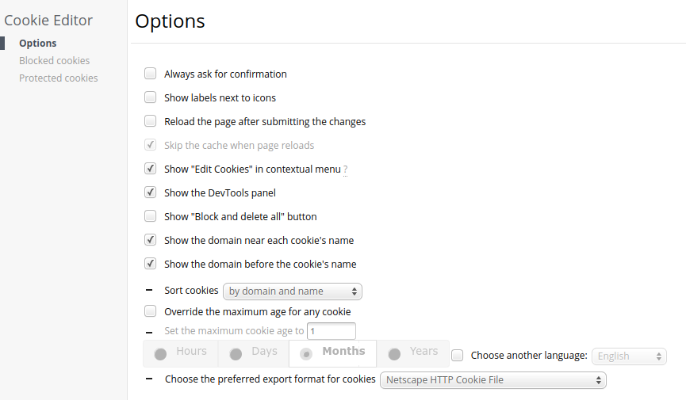
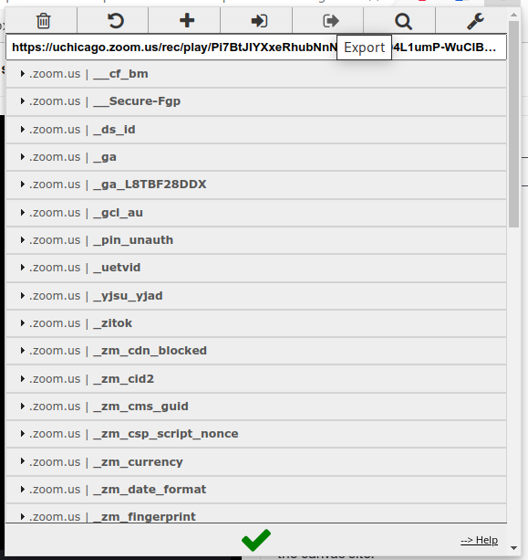

Using yt-dlp With Zoom And Panopto

Table of Contents
Introduction #
If anyone uses Zoom to record or Panopto to host recordings and later wants to access the recordings, here’s a simple linux bash script to download the video file and acompanying subtitles. For a while I used zoomdl, but it is no longer under active development, and I began running into various issues about a year ago. I stumbled upon yt-dlp and found it under active development and quite extensive.
This tutorial requires you to have a “cookies” text file, which needs to contain the cookies export in the Netscape HTTP format of the Zoom cookies after logging in.
Install cookie editor #
Install the cookie editor extension. I personnally use it with Microsoft Edge, but there are similar extensions for Chrome, Firefox, etc.
Modify export format #
Change the preferred cookie export format to Netscape HTTP Cookie File in the extension options. It is necessary to export in this format, otherwise yt-dlp will not be able to read the cookies.txt file correctly.

Log in to Zoom or Panopto #
Log in to Zoom or Panopto in your browser. Be sure to remain logged in while exporting the cookies.
Export cookies #
The export button is at the top fo the window. It copies the cookies to your clipboard, which then need to be pasted into a text file (I have my saved as cookies.txt), which yt-dlp will then read when it executes.

Install yt-dlp #
In Arch Linux, yt-dlp can be found with:
$ yay yt-dlp
Or:
$ sudo pacman -Sy yt-dlp
Create bash script for Zoom #
Save the following code to a text file (my bash script file name is yt-dlp-zoom.sh):
#!/bin/bash
echo What is the link?
read link
yt-dlp --referer "https://zoom.us/" --cookies /path/to/cookies/file/cookies_zoom.txt -o "%(title)s-%(id)s.%(ext)s" --write-subs $link
Create bash script for Panopto #
Save the following code to a text file (my bash script file name is yt-dlp-panopto.sh):
#!/bin/bash
echo What is the link?
read link
yt-dlp --cookies /path/to/cookies/file/cookies_panopto.txt -o "%(title)s-%(id)s.%(ext)s" --write-subs $link
Change permissions #
Modify the permissions of the bash scripts to allow execution:
$ chmod +x yt-dlp-zoom.sh
$ chmod +x yt-dlp-panopto.sh
Execute the scripts #
Execute the bash script with either ./yt-dlp-zoom.sh or ./yt-dlp-panopto.sh, copy and paste the link into the shell prompt for the video that you would like to save, and it should download the video and the subtitles.